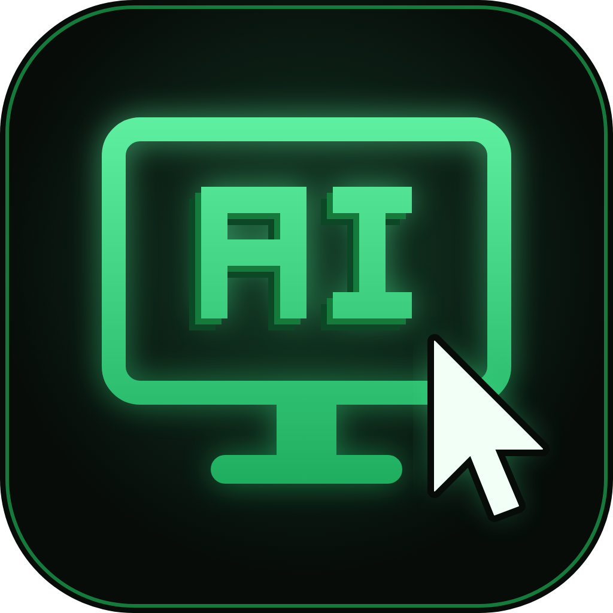

Выбери свою ОС — покажем точные команды. При первом запуске всё настроится само.
клик — скопировать# проще всего: npm i -g aipc-sysik # или exe с релизов, дальше: aipc
клик — скопировать# бинарь с релизов: chmod +x AiPC_macOS_1.1.1 && ./AiPC_macOS_1.1.1 # или пакетом: npm i -g aipc-sysik pip install aipc-sysik
клик — скопировать# бинарь с релизов (лучше X11-сессия): chmod +x AiPC_Linux_1.1.1 && ./AiPC_Linux_1.1.1 # или пакетом: npm i -g aipc-sysik pip install aipc-sysik
Дальше: aipc mcp — команда для IDE, aipc install --dry-run — предпросмотр изменений.
Шесть контуров работы — от глаз до полного контроля.
Скриншот приходит нативным image-блоком: примерно в 10 раз дешевле base64 по токенам. Дерево интерфейса сразу отдаёт координаты для клика.
> screen_see картинка + отмеченный курсор > ui_find "Сохранить" {"t":"Button","x":512,"y":884}
Мышь, клавиатура, буфер обмена, запуск приложений. Печатает только в проверенное окно, а не в пустоту.
> focus_type проверяет фокус, печатает атомарно > press_key Enter
Подключается через CDP: вкладки, переходы, JS на странице и поиск по истории. Надёжнее кликов по координатам.
> browser_goto youtube.com > browser_eval document.querySelector('h1').innerText
Читает и пишет файлы с бэкапом .bak, запускает команды, качает по SSH/SFTP стримом. Ошибки приходят структурно.
> run_cmd ipconfig stdout и stderr раздельно > ssh_sftp_get /var/log/app.log → C:\logs\
Цикл «увидел, сделал, проверил»: ждёт окна и элементы вместо слепых пауз и сверяет результат новым скриншотом.
> wait_for_window "Сохранить как" ждёт окно, а не спит наугад > assert_ui "Готово" {"ok": true}
Режимы ask, auto, read-only, запреты на команды и пути, журнал каждого вызова. Админ-права нужны один раз, при установке.
mode: read-only мутирующие tools блокирует сервер > run_cmd mimikatz {"ok": false, "reason": "denied"}
Две минуты — и понятно, как это выглядит живьём.
Готовые сборки со страницы релизов. Твоя ОС подсвечена автоматически.
Один раз — при установке (UAC сам запросит). Дальше всё работает из-под обычного пользователя, MCP регистрируется без админа.
Да, Wayland режет синтетический ввод — это ограничение протокола, не баг. Зайди в X11-сессию (шестерёнка на экране входа), там всё работает.
Режим ask (по умолчанию) спрашивает человека перед каждым опасным действием с таймерами 10/60 минут. Есть read-only — только смотреть. Все вызовы пишутся в audit.log.
19 штук из коробки: Cursor, VS Code, Claude Desktop/Code, Windsurf, Zed, Gemini CLI, Codex, Antigravity, Continue и другие. Команда aipc install --ide cursor или меню → Настроить.